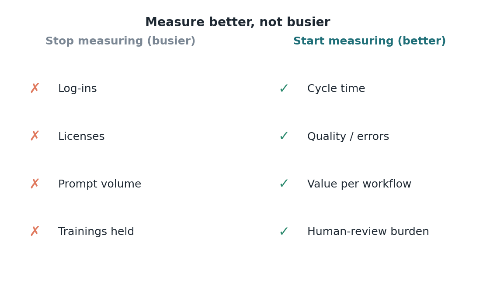

Issue 13 — Enforce: redesign the operating system, measure better not busier
Behind many stalled transformations is a measurement system still rewarding the behavior the transformation was meant to change. The core prescription of the Enforce stage is blunt: redesign metrics, incentives, decision rights, promotion criteria, and rituals so the system reinforces the new way — and measure better, faster, and safer rather than busier. Where old activity metrics survive, they actively pull people back to old behavior.
The specific metric swap matters. Stop measuring log-ins, licenses assigned, prompt volume, and trainings held. Start measuring cycle time, quality and error rates, value delivered per workflow, cost per task, and human-review burden. The first set counts activity and is easy to game; the second set counts outcomes and connects directly to the results the whole 1:3:5 investment was chasing. Measuring the wrong set is worse than not measuring — it steers effort toward volume in a world where volume is free.
There's a structural reason activity metrics turn toxic under automation. When an agent can produce near-unlimited throughput, any metric that rewards throughput rewards the machine, not the human — and implicitly frames the human as competing with the machine on the one axis they'll lose. Outcome metrics (quality, judgment, value) reframe the human as the differentiator. The measurement choice literally determines whether staff experience agents as threat or as tool.
Decision rights and promotion criteria are the enforcement levers people forget. If approval authority and career advancement still flow to those who do everything manually, no dashboard will hold the new behavior. Redesigning who decides what — and rewarding the skills the new operating model needs (judgment, process redesign, agent oversight) — aligns the strongest incentives in the organization with the change. These are slow to move but decisive; they're where culture is actually encoded.
For measurement discipline, adopt a simple test for any proposed KPI: does it reward better/faster/safer, or merely busier? If a metric could be maximized by a tireless machine doing low-value work, it's the wrong metric. The right metrics are the ones a machine alone can't max out — because they require human judgment, quality, and value creation. That test alone prevents most of the measurement mistakes that quietly sink AI programs.
The strategic takeaway: the Enforce stage is where transformations are won or quietly lost, and it costs mostly will, not money. Rewiring metrics, incentives, and decision rights is inexpensive relative to the technology — but it's politically hard, because it changes what gets rewarded. Organizations that do it convert every prior dollar into durable results; those that skip it watch the change decay back to baseline while wondering why the tools underdelivered.

A concrete example makes the danger vivid. Suppose you keep an old KPI — "claims touched per analyst per day." Deploy a status agent and that number can rocket, because the agent touches thousands of claims. A leader reading only that metric would declare victory. But the metric is now meaningless: it's measuring the machine's throughput, not the team's value, and worse, it pressures analysts to chase volume instead of working the complex denials where recovery actually lives. The right replacement — net collections per analyst, clean-claim rate, days-to-resolution on aged accounts — is harder to inflate and points people at value. The lesson generalizes: every legacy activity metric should be audited for whether an agent can now trivially max it out. If it can, retire it before it starts steering behavior in the wrong direction.
Forward this to whoever owns your scorecard: if we measure busier, we'll get busier — let's measure better, faster, and safer instead.
Sources
- Enforce: redesign metrics/incentives/decision rights/promotion/rituals; measure cycle time, quality, value per workflow, cost per task, human-review burden — not logins/licenses/prompts — McKinsey (Aug 7, 2026).